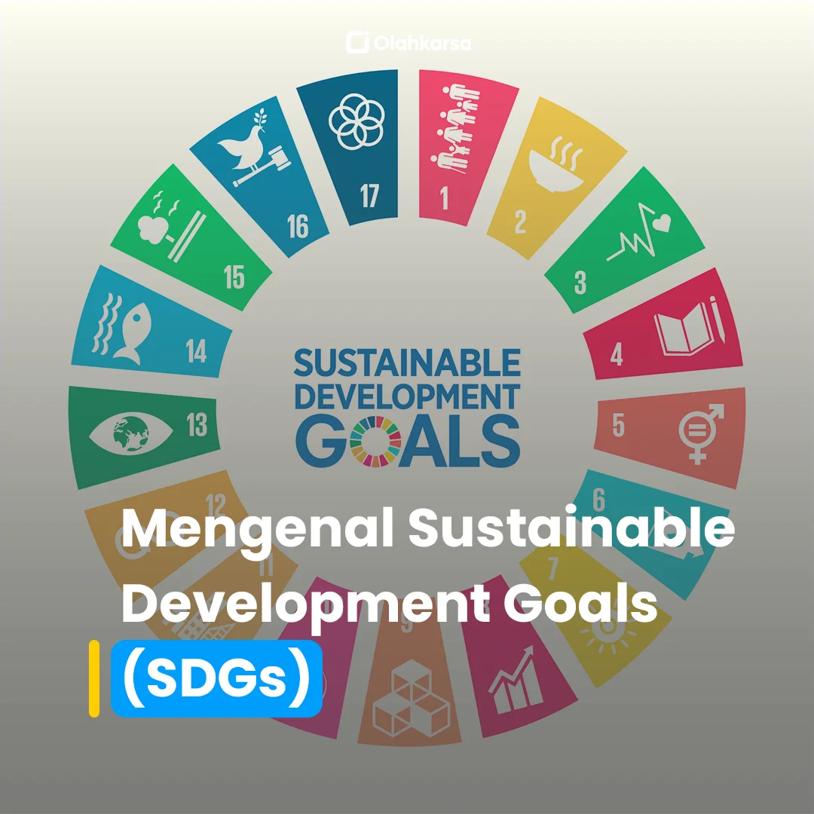
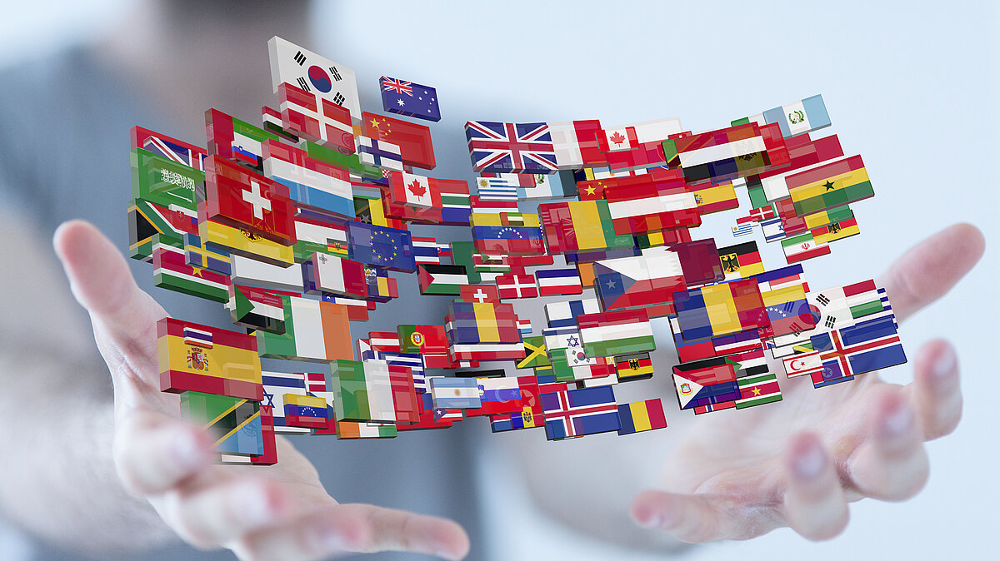
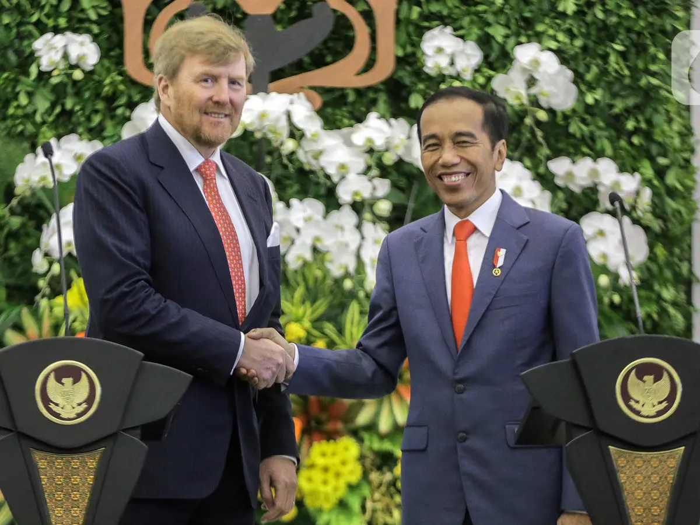
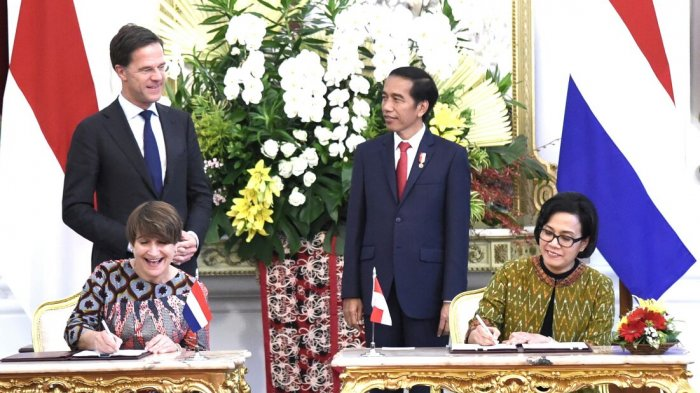

Halo, Sahabat Pembaca yang Hebat! 🌟👋
Perkenalkan, saya Quinn dari kelas 93 absen 26. Pada web ini, saya akan membahas dua topik menarik: hubungan antara SDGs 🌱 dan kerja sama internasional 🌏 untuk mencapai Indonesia yang maju 🇮🇩, serta hubungan diplomatik antara Indonesia dan Belanda 🇮🇩🤝🇳🇱. Namun, sebelum memulai, izinkan saya memanjatkan puji syukur kepada Tuhan Yang Maha Esa 🙏 atas rahmat dan bimbingan-Nya sehingga saya dapat menyelesaikan tugas ini dengan baik dan tepat waktu. Tanpa bantuan-Nya, tentu saya tidak mampu menyelesaikan web ini seperti sekarang.
Web ini dirancang dengan harapan dapat memberikan wawasan baru yang bermanfaat bagi pembaca. Dalam pembahasan ini, saya akan mengupas beberapa poin penting: pengertian SDGs 🌱 dan hubungannya dengan kerja sama internasional 🌍, contoh nyata kerja sama global yang relevan 🤝, serta bagaimana hubungan historis dan diplomatik antara Indonesia 🇮🇩 dan Belanda 🇳🇱 dapat berkontribusi pada pembangunan masa depan yang lebih baik 🌟.
SDGs atau Sustainable Development Goals adalah agenda global yang dirancang oleh PBB 🌐 untuk menciptakan dunia yang lebih adil ⚖️, sejahtera 💰, dan berkelanjutan 🌿. Terdapat 17 tujuan dalam SDGs, seperti menghapus kemiskinan 🚫💸, menciptakan pendidikan berkualitas 🎓, hingga menjaga kelestarian lingkungan 🌳. Dalam konteks Indonesia 🇮🇩, pencapaian SDGs tidak dapat dilepaskan dari kerja sama internasional 🌏. Misalnya, program-program bantuan teknis 🛠️, investasi asing 💼, serta transfer teknologi 📡 yang memungkinkan negara-negara berkembang seperti Indonesia untuk mempercepat pembangunan.
Di era globalisasi 🌐, tantangan yang dihadapi suatu negara tidak lagi bisa diselesaikan secara individu. Masalah seperti perubahan iklim 🌪️, ketimpangan sosial 🌍⚖️, atau pandemi 🦠 hanya dapat diatasi melalui kerja sama lintas negara 🤝. Sebagai contoh, Indonesia 🇮🇩 telah menjalin kemitraan strategis dengan berbagai negara untuk mewujudkan tujuan SDGs, salah satunya SDG ke-4: Pendidikan Berkualitas 📚. Melalui program beasiswa 🎓, pertukaran pelajar 🌍✈️, dan pelatihan tenaga pendidik 🧑🏫, Indonesia bekerja sama dengan negara-negara maju untuk meningkatkan kualitas pendidikan generasi muda.
Selain membahas SDGs, saya juga mengulas hubungan unik antara Indonesia 🇮🇩 dan Belanda 🇳🇱. Dimulai dari sejarah panjang yang penuh dinamika 📜, hubungan kedua negara telah berkembang menjadi kerja sama yang saling menguntungkan di berbagai bidang 🌐, seperti perdagangan 💼, pariwisata ✈️, hingga pendidikan 📖. Saat ini, Belanda menjadi salah satu mitra dagang utama Indonesia di Eropa 💶, sekaligus salah satu negara yang mendukung program-program pembangunan berkelanjutan 🌱 di Indonesia.
Namun, tentu saja perjalanan menuju Indonesia yang maju 🇮🇩✨ tidak tanpa hambatan 🚧. Tantangan seperti ketimpangan akses pendidikan 🎓, isu lingkungan 🌿, dan ketahanan ekonomi 💰 menjadi pekerjaan rumah besar yang harus diselesaikan bersama-sama 🤝. Dengan kerja sama internasional yang kuat, tantangan-tantangan ini dapat diubah menjadi peluang untuk menciptakan masa depan yang lebih baik bagi seluruh rakyat Indonesia ❤️.
Kita semua memiliki peran dalam mendukung pencapaian SDGs 🌱. Mulai dari langkah kecil seperti menghemat energi 🔋, mendukung produk lokal 🛍️, hingga menyebarkan kesadaran 📢 tentang pentingnya pembangunan berkelanjutan. Dengan kontribusi kita bersama, bukan tidak mungkin Indonesia menjadi negara yang lebih maju 🇮🇩 dan sejahtera 🌟 di masa depan.
Melalui web ini, saya mengajak Sahabat Pembaca untuk menyelami lebih dalam tentang bagaimana kerja sama internasional 🌍 dan hubungan diplomatik 🤝 menjadi kunci keberhasilan pembangunan ✨. Dari dinamika masa lalu yang penuh tantangan 📜 hingga strategi menciptakan harmoni di masa depan 🌈, semuanya tersaji dengan menarik dan mudah dipahami 📚.
Selamat membaca dan menjelajahi! 💡✨
Semoga web ini dapat menginspirasi kita semua untuk lebih peduli pada peran kita dalam mewujudkan dunia yang lebih baik 🌏✨.
Salam hangat dan penuh semangat, 🌟✨ Quinn ✨🌟
   


.svg)
.svg)